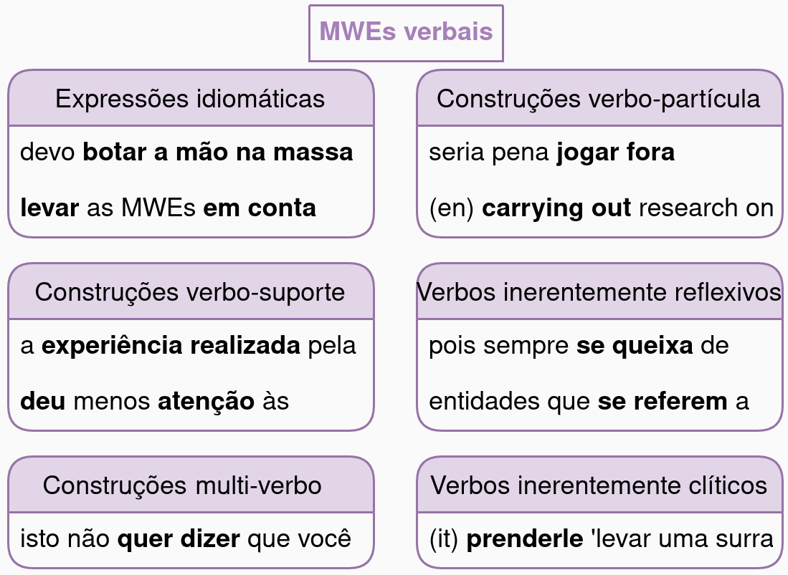
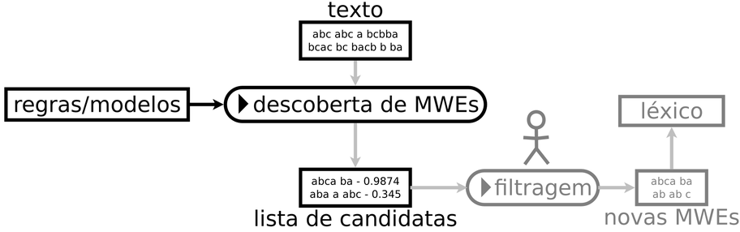
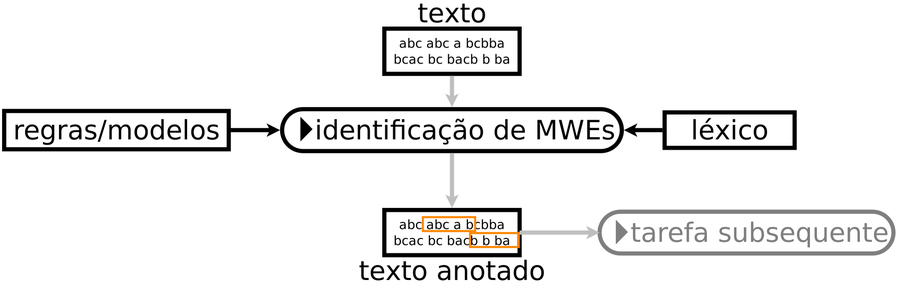
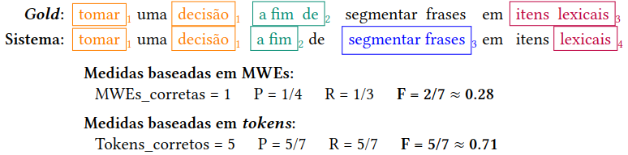

5 Expressões multipalavras
fogo de palha ou osso duro de roer?
5.1 Introdução
Para além das palavras, as linguagens humanas em sua riqueza têm modos particulares de expressar ideias complexas de maneira convencional – e muitas vezes abreviada. Esse fenômeno, que faz parte do inventário de diversas comunidades linguísticas, é chamado de expressões multipalavras. Esse é geralmente um tema indigesto no universo do Processamento de Linguagem Natural (PLN), porque essas expressões estão no limite entre a sintaxe e a semântica, e sempre acabam ficando no meio do fogo cruzado. De um lado, elas apresentam idiossincrasias e especificidades que não permitem determinadas operações sintáticas e semânticas comuns a outras combinações de palavras. De outro, essas expressões se caracterizam por representarem significados complexos que, em geral, ultrapassam os limites dos sentidos das palavras individuais. Em essência, o significado do todo pode não se dar pela soma das partes. Por exemplo, uma ideia pode ser considerada “sem pé nem cabeça” quando ela não faz sentido, apesar de ideias serem abstratas e não serem dotadas de corpos, pés ou cabeças.
Assim, nosso objetivo neste capítulo é, em primeiro lugar, definir quais são os conceitos fundamentais para quem vai navegar pelas águas turbulentas do tratamento computacional de expressões multipalavras. Começaremos por discutir quais são os elementos que compõem uma expressão: seriam palavras? Seriam lexemas? Na sequência, abordaremos o conceito de expressão multipalavras (MWE) propriamente dito1. A literatura traz inúmeras maneiras de analisar essas expressões, e as definições são tão variadas quanto os campos de estudo que se interessam por esse tema.
Dessa forma, apresentaremos na Seção Hora de dar nome aos bois a definição de MWEs que adotamos neste capítulo. Na sequência, vamos tentar separar o joio do trigo, uma vez que, para entender o que são MWEs, é fundamental que você saiba também o que elas não são (por exemplo, compostos, colocações e metáforas não são MWEs). Apresentamos também algumas questões relacionadas às possibilidades de classificação das expressões multipalavras, embora ainda haja um longo caminho a se percorrer para chegarmos a uma taxonomia abrangente e consensual. Para completar a fundamentação teórica, trazemos uma discussão sobre três características importantes das MWEs: ambiguidade, variabilidade e arbitrariedade.
Após as conceituações, descrevemos na Seção Tarefas: botando a mão na massa as principais tarefas de PLN que envolvem MWEs, as quais se dividem basicamente em dois grandes grupos: a) a descoberta; e b) a identificação de MWEs. Depois, veremos na Seção Recursos: uma joia rara uma breve apresentação dos recursos existentes, com foco no português brasileiro, embora eles sejam pouco numerosos ou variados em comparação com aqueles de outras línguas. Por sinal, incentivamos leitoras e leitores a colocar a mão na massa em busca de uma mudança desse cenário. Na Seção Avaliação: colocando os pingos nos ’i’s, trataremos as principais métricas de avaliação comumente utilizadas pela comunidade para avaliar o desempenho dos sistemas de processamento computacional de MWEs.
Por fim, consideramos importante olhar pelo retrovisor e entender qual foi o percurso para chegar até o ponto em que estamos, em termos científicos, na busca por resolver a complexa temática das MWEs (Seção Até onde chegamos e para onde vamos). Qual é o cenário atual? Qual é a posição do português brasileiro em termos de recursos e pesquisas diante da comunidade internacional? Quais são os desafios que permanecem a pesquisadoras, pesquisadores e entusiastas das MWEs para descascar esse abacaxi em tempos de modelos de língua tão grandes que não cabem em si?
Quem quiser ir mais longe, poderá dar uma olhada nas referências e nos links listados na Seção Ao infinito e além. Sem querer prometer mundos e fundos, este capítulo tenta acrescentar mais um tijolo na construção do conhecimento linguístico em PLN para o português brasileiro. Como você pôde perceber por esta introdução, o texto contém uma série de exemplos de expressões multipalavras, tanto para ilustrar fenômenos linguísticos quanto para divertir leitoras e leitores.
5.2 Hora de dar nome aos bois
Antes de iniciarmos a nossa jornada pelo universo das MWEs, precisamos definir algumas noções importantes. Uma parte dos conceitos discutidos a seguir baseia-se no projeto internacional PARSEME, do qual fazemos parte. O PARSEME reúne especialistas em MWEs em mais de 20 línguas, incluindo o português. Seu objetivo é criar corpora anotados com MWEs em diversas línguas usando diretrizes de anotação unificadas. Além disso, o PARSEME organizou várias shared tasks (Seção Datasets pra quê?) para avaliar sistemas de identificação de MWEs2.
5.2.1 As pedras fundamentais
Como o nome indica, expressões multipalavras possuem, necessariamente, duas ou mais palavras. Logo, o primeiro conceito a definir é o próprio conceito de palavra. Tal definição está longe de ser um consenso (Church, 2013; Manning; Schütze, 1999; Mel’čuk et al., 1995), mas como o Capítulo Sequência de caracteres e palavras já abordou essa discussão de forma aprofundada, não vamos retomá-la aqui.
Na verdade, o termo lexema seria mais preciso do que palavra para definir tais expressões. Lexemas são unidades lexicais elementares de significado que representam blocos básicos do léxico de uma língua, como explicado na Seção 4.1.3. Porém, o termo expressões multipalavras já está consolidado, e não pretendemos a essa altura do campeonato erguer a bandeira da mudança terminológica para expressão multilexemas. Portanto, vamos nos referir aos elementos que compõem uma MWE como palavras.
Em PLN, palavras (ou lexemas) são frequentemente confundidas com tokens. Conforme explicado na Seção 4.2.2, os tokens são o resultado de um processo computacional de tokenização, ou seja, a segmentação do texto em unidades menores. Aqui, adotamos a distinção entre palavra e token do PARSEME (Savary et al., 2018, p. 92), que, por sua vez, é baseada no projeto Universal Dependencies (Marneffe et al., 2021, p. 259), mencionado em outros capítulos do livro:
Uma palavra é uma unidade (semântica) linguisticamente motivada. A identificação de palavras é, portanto, dependente da língua, e anotadores devem ter uma ideia clara de como defini-las para a sua própria língua.
Um token é uma noção técnica e pragmática, definida de acordo com indícios linguísticos mais ou menos motivados e de acordo com a ferramenta de tokenização específica que se tem em mãos.
Idealmente, tokens e palavras teriam uma correspondência de 1 para 1. Em línguas que utilizam espaços para separar palavras (como é o caso do português), é o que geralmente acontece. Entretanto, uma tokenização perfeita é praticamente impossível, como em substantivos compostos (“girassol”), contrações (“caixa d’água”) e certas convenções ortográficas (“super-herói”). Além disso, o uso do espaço como separador não é universal: o chinês e o japonês, por exemplo, não separam visualmente as palavras, enquanto o alemão não separa os substantivos compostos3. Como consequência, as MWEs podem ou não conter espaços, uma vez que isso depende das convenções ortográficas da língua e/ou do software de tokenização. Mas se a presença ou ausência de espaços não é um critério suficiente, como saber se determinado grupo de palavras é ou não é uma MWE?
5.2.2 Definições de MWE: uma pedra no nosso sapato
Infelizmente, não existe uma definição única para o termo MWE, pois o conceito é uma espécie de “guarda-chuva” sob o qual se agrupam diversos fenômenos linguísticos. Por um lado, poderíamos dizer informalmente que MWEs são palavras que se dão bem. Porém, apesar de ser intuitiva, essa definição não é suficientemente rigorosa para fins práticos. Por outro lado, muito latim já foi gasto para definir e caracterizar o fenômeno de maneira mais precisa e rigorosa. Por exemplo, as diretrizes do projeto PARSEME para MWEs verbais têm 134 páginas4!
Entre a definição intuitiva e lacônica (palavras que se dão bem) e as dezenas de páginas das diretrizes do PARSEME, várias definições alternativas foram propostas, com escopos ligeiramente diferentes. Smadja (1993) enfatiza a frequência, definindo MWEs como “combinações arbitrárias e recorrentes de palavras”. Já Choueka (1988) afirma que uma MWE é “uma unidade sintática e semântica cujo significado ou conotação exata e inequívoca não pode ser derivado diretamente do significado ou conotação de seus componentes”. No famoso artigo “pain-in-the-neck”, Sag et al. (2002) definem as MWEs como “interpretações idiossincráticas que cruzam os limites (ou espaços) das palavras”5.
Um dos motivos dessa diversidade de definições é o fato de que várias áreas do conhecimento, com pontos de vista diversos, têm interesse no fenômeno: linguística, PLN, ciências cognitivas, fraseologia, lexicografia, terminologia etc. Neste capítulo, como já anunciamos anteriormente, vamos usar a definição do PARSEME (Savary et al., 2018), cujos três aspectos principais discutidos na sequência são idiossincrasia, estrutura sintática e lexicalização.
Quadro 5.1 Expressões multipalavras
Fonte: (Savary et al., 2018)
Idiossincrasia
Uma idiossincrasia é um comportamento excepcional ou imprevisível. Na definição do Quadro 5.1, o termo se refere ao fato de que MWEs divergem das regras de composição padrão, resultando em combinações imprevisíveis. Assim, poderíamos definir as MWEs como “exceções que ocorrem quando as palavras são combinadas”. Essa idiossincrasia é frequentemente semântica (Capítulo E o significado?), visto que “o significado de uma MWE não deriva explicitamente das suas partes” (Baldwin; Kim, 2010). Por exemplo, o significado de “banho” e o de “maria” não resultam no significado de “banho-maria” (técnica de cozimento lento). Embora essa idiossincrasia semântica seja uma das características mais prototípicas das MWEs, elas também podem ter outros tipos de idiossincrasias, de natureza lexical, morfológica ou sintática.
Estrutura sintática
A definição do Quadro 5.1 estipula que as palavras que formam uma MWE devem estar “sintaticamente relacionadas”, ou seja, apresentar coesão sintática. Existem diversos formalismos sintáticos (Capítulo A ordem e a função das palavras em uma sentença), mas o PARSEME se baseia na sintaxe de dependências do Universal Dependencies (Subseção Projetos de anotação multilingue: Universal Dependencies). Portanto, consideramos as MWEs como subárvores de dependência formadas por lexemas que não são necessariamente adjacentes no texto. Por exemplo, a anotação de “ter como/por objetivo” exclui as preposições (variáveis), que não ligam o verbo ao objeto como na sintaxe de dependências tradicional, mas dependem do substantivo “objetivo”6. Assim, considerando que uma MWE “age como uma unidade atômica em algum dos níveis de análise linguística” (Calzolari et al., 2002), poderíamos atribuir etiquetas morfossintáticas (Kahane et al., 2017) e semânticas (Schneider; Smith, 2015) às expressões, da mesma maneira como atribuiríamos para palavras simples.
Lexicalização
Uma questão que surge rapidamente ao anotar as MWEs diz respeito à sua extensão: quais palavras fazem parte da expressão e quais não? Por exemplo, o determinante “as” deve ser anotado como parte da MWE em “fazer as apresentações”? Ou em “dar as caras”? No PARSEME, as diretrizes para a extensão da anotação se baseiam na noção de componentes lexicalizados. Um componente lexicalizado é uma palavra que, em todas as ocorrências possíveis da expressão, é sempre realizada pelo mesmo lexema. Isso quer dizer que os componentes lexicalizados não podem ser omitidos ou substituídos por sinônimos, caso contrário, a MWE se tornaria agramatical ou teria um novo sentido (não idiomático). Por exemplo, em “tomar um banho”, o determinante “um” não é um componente lexicalizado, pois pode ser substituído por outro determinante ou omitido sem perder o significado idiomático (“tomar dois banhos”). Entretanto, “fazer as pazes” não pode significar “resolver um conflito” em “fazer a paz”; portanto, “as” é um componente lexicalizado nessa expressão7.
5.2.3 Separando o joio do trigo
O fato de uma expressão ser composta por mais de uma palavra não a torna automaticamente uma MWE: como vimos anteriormente, expressões multipalavras precisam também apresentar alguma idiossincrasia com relação a expressões estruturalmente semelhantes, consideradas regulares, composicionais e produtivas. Portanto, agora que definimos o que são as MWEs, vamos explicitar brevemente o que elas não são.
O termo colocação muitas vezes é visto como sinônimo de MWE. Neste capítulo, adotamos a definição de colocações como sendo combinações de palavras que aparecem juntas com mais frequência do que o esperado por puro acaso8. Logo, podem ser combinações completamente regulares que apresentam apenas preferências de associação estatística, sem nenhuma outra idiossincrasia (por exemplo, “ler um livro”). Consideramos que a saliência estatística não é um critério suficiente para caracterizar MWEs.
Compostos são lexemas resultantes do processo de formação de palavras (ou seja, justaposição de lexemas, às vezes com pequenas adaptações morfológicas). Dependendo do idioma, os compostos não apresentam necessariamente um comportamento idiossincrático, de modo que nem todos eles são MWEs.
As metáforas até podem evoluir para MWEs ao longo do tempo, mas geralmente são mais flexíveis. Por exemplo, o “coração” está associado a emoções, e “partir o coração” pode ser parafraseado como “destruir o amor”9. Nas metáforas, geralmente é difícil identificar pelo menos dois componentes lexicalizados, que não podem ser parafraseados. Então, elas não são consideradas MWEs.
Por fim, as MWEs podem ser definidas como combinações que “correspondem a alguma forma convencional de dizer as coisas” (Manning; Schütze, 1999). No entanto, a convenção também está em jogo em entidades nomeadas e termos de domínios específicos, por exemplo, da saúde (Capítulo PLN na Saúde) ou do direito (Capítulo PLN no Direito). Entidades nomeadas se referem a entidades específicas no mundo, como pessoas (“Inês Brasil”), lugares (“Porto Alegre”) e organizações (“Movimento dos Sem Terra”). Os termos, por sua vez, denotam conceitos especializados de um domínio técnico ou científico (“redes neurais”, “ressonância magnética”). Embora seja possível ver termos e entidades nomeadas multipalavras como MWEs, isso não é conveniente. Dada a natureza complexa das expressões multipalavras, elas já dão bastante pano pra manga10. Assim, parece razoável delegar o tratamento de entidades nomeadas e termos a outras comunidades de pesquisa, por exemplo, em extração de informações (Capítulo Extração de Informação)11. Então, consideramos que convencionalidade não é um critério suficiente para MWEs.
5.2.4 MWEs para dar e vender
As expressões multipalavras são um fenômeno linguístico diverso, que desafia inúmeras tentativas de categorização. Porém, pode ser útil agrupar expressões semelhantes em categorias, tanto para a criação de recursos lexicais quanto para a anotação de corpora (Seção Recursos: uma joia rara). Ramisch (2015) resume um conjunto de classificações de MWEs propostas na literatura, abrangendo a gramática de construções (Fillmore et al., 1988), a teoria sentido-texto (Mel’čuk; Polguère, 1987) e as classificações orientadas ao PLN (Sag et al., 2002; Smadja, 1993). O autor também propôs uma tipologia baseada em dois eixos ortogonais: a distribuição morfossintática da MWE como um todo e o nível de “dificuldade”.
Parra Escartín et al. (2018) fazem uma comparação geral dessas classificações, propondo não apenas uma nova categorização, mas também critérios para categorizar as MWEs. O artigo sugere que “as tipologias de MWEs devem ser adaptadas à língua que está sendo pesquisada, e as tipologias clássicas baseadas principalmente no inglês não parecem adequadas para descrever e classificar as MWEs em outras línguas”. Por exemplo, as construções verbo-partícula do inglês (por exemplo, “take off”) são frequentemente consideradas uma categoria importante de MWEs, embora sejam irrelevantes para línguas de muitas famílias linguísticas, como as eslavas e as românicas (família da qual o português faz parte). Os verbos inerentemente reflexivos (por exemplo, “se queixar”) são muito mais comuns nessas línguas, mas raramente são incluídos em classificações centradas no inglês.

Fonte: Imagem adaptada e traduzida de (Ramisch, 2023).
MWEs verbais
Uma categorização de MWE única, operacional e válida em todas as línguas, abrangendo todos os fenômenos que correspondem à definição do Quadro 5.1, é uma questão de pesquisa aberta e ambiciosa. No entanto, um passo importante nessa direção é a tipologia do PARSEME para MWEs verbais, que abrange um grande número de línguas de diferentes famílias (Savary et al., 2018). A categoria das MWE verbais do PARSEME engloba seis subcategorias mais específicas, determinadas principalmente pela natureza do complemento usado pelo verbo principal: construções multi-verbo, se o complemento for outro verbo; verbos inerentemente reflexivos (IRV), se for um clítico reflexivo; verbos inerentemente clíticos, se for outro clítico (não reflexivo); construções verbo-partícula, se for uma partícula homônima a uma preposição ou um advérbio. Todos os outros tipos de MWEs verbais idiossincráticas deveriam, em teoria, pertencer à categoria expressões idiomáticas verbais (VID). Contudo, uma categoria especial tem precedência sobre as expressões VID: as construções verbo-suporte (LVC) são formadas por substantivos predicativos (que denotam eventos ou estados), acompanhados por um verbo-suporte (também chamado de verbo leve) que modifica o evento ou estado por meio de suas características morfológicas. Exemplos de cada categoria podem ser vistos na Figura 5.112. Falaremos mais sobre essas categorias na Subseção Corpora de MWEs em português, que descreve o corpus PARSEME do português brasileiro.
MWEs não verbais
A generalização da categorização do PARSEME para outras categorias morfossintáticas além dos verbos, bem como a extensão das diretrizes de anotação, constitui um objetivo ousado para trabalhos futuros. Todavia, existem na literatura algumas propostas para algumas línguas específicas. Por exemplo, Schneider; Smith (2015) propõem uma categorização simples em expressões “fracas” e “fortes”. As diretrizes de anotação do corpus STREUSLE13 descrevem de que maneira distinguir essas duas categorias em inglês. Já Candito et al. (2021) diferenciam apenas MWEs de entidades nomeadas, anotando as MWEs em francês de acordo com seu papel morfossintático na frase (substantivo, verbo etc.). Além disso, as autoras e autores também indicam o(s) critério(s) usado(s) para considerar que determinada combinação é uma MWE.
Por fim, Ramisch (2023) propõe uma taxonomia baseada nas categorias de palavras simples do Universal Dependencies (Marneffe et al., 2021). Adotar a visão do UD pode ser interessante porque ela já foi testada para centenas de línguas e corpora anotados com sintaxe, como descrito no Subseção Projetos de anotação multilingue: Universal Dependencies. No UD, as unidades linguísticas são classificadas como nominais, que se referem a entidades (geralmente substantivos); orações, que se referem a eventos ou estados (geralmente verbos); modificadores, usados para especificar os atributos de nominais, orações ou outros modificadores (tradicionalmente adjetivos e advérbios). Além disso, um conjunto de itens funcionais, como determinantes e verbos auxiliares, não são independentes, mas atuam como especificadores do significado ou da função sintática das três categorias principais. A tipologia proposta por Ramisch (2023) estende essas noções às expressões multipalavras.
5.2.5 Um osso duro de roer
Depois dessa árdua missão de categorizar as MWEs, tentar persuadir a leitora ou o leitor de que essas expressões são difíceis de modelar e processar seria ensinar o padre a rezar a missa. Portanto, vamos nos concentrar em três propriedades onipresentes nas MWEs: ambiguidade, variabilidade e arbitrariedade14. Elas são ao mesmo tempo difíceis de lidar e interessantes de explorar para detectar a presença de MWEs em textos (Constant et al., 2017).
Ambiguidade
A ambiguidade dificulta a identificação de expressões multipalavras porque determinada combinação de lexemas pode ser ou não uma MWE, dependendo do contexto em que ela ocorre. Por exemplo, “quebrar um galho” é claramente uma MWE em “meu mecânico me quebrou um galho arrumando o meu carro no domingo”, mas não em “o vento foi tão forte que quebrou um galho do jacarandá”. Essa propriedade das MWEs foi amplamente estudada, sobretudo em estudos cognitivos interessados em como o significado idiomático é armazenado e acessado no cérebro humano (Geeraert et al., 2018; Popiel; McRae, 1988). Entretanto, na prática, parece que a importância do problema foi superestimada. Savary et al. (2019b) demonstram que, pelo menos para MWEs verbais em cinco idiomas diferentes (entre os quais o português), a proporção de leituras literais, em comparação com ocorrências idiomáticas, é praticamente irrelevante (2-4%). Em termos práticos, isso significa que um sistema de identificação automática baseado em regras pode ser tão eficiente quanto (ou até mais eficiente que) um sistema mais complexo, baseado em desambiguização contextual estatística usando aprendizado de máquina (Pasquer et al., 2020). No entanto, seria necessário aumentar consideravelmente a cobertura dos léxicos de MWEs (Seção Recursos: uma joia rara) para conferir certa robustez a métodos baseados em regras (Savary et al., 2019a).
Variabilidade
Um dos desafios para se lidar com as expressões multipalavras é que, embora os exemplos prototípicos sejam completamente fixos, na prática há uma variabilidade significativa entre diferentes ocorrências de uma mesma MWE, especialmente para algumas categorias, como as verbais. A variabilidade limitada constitui uma propriedade observável que é frequentemente usada em testes linguísticos para a presença dessas expressões. Muitos testes de variabilidade foram projetados para capturar a idiomaticidade morfológica, lexical, sintática, semântica e pragmática das MWEs (Savary et al., 2018; Schneider; Smith, 2015). No nível léxico-semântico, a variabilidade limitada também foi chamada de não substituibilidade (Manning; Schütze, 1999). A substituição por um lexema relacionado é um teste útil para verificar se um componente é lexicalizado e se a combinação apresenta algum grau de idiossincrasia semântica, já que o resultado geralmente é inaceitável ou agramatical, ou produz uma mudança de significado inesperada (por exemplo, “bater as botas/?sapatilhas”). Nos níveis morfológico e sintático, a variabilidade limitada geralmente se manifesta por meio de um comportamento sintático irregular (por exemplo, “quem me dera”) em relação a construções sintaticamente semelhantes (por exemplo, “?quem lhe deu”). Mas a variabilidade é uma faca de dois gumes: ao mesmo tempo em que ajuda a identificar e anotar as MWEs manualmente, também dificulta sua identificação automática quando determinada forma (canônica) é conhecida, por exemplo, em um léxico, e a expressão ocorre de uma outra forma (“throw someone to the lions vs. wolves”).
Arbitrariedade
Nas MWEs, as palavras interagem de maneiras pouco usuais umas com as outras, assumindo significados inesperados ou até mesmo perdendo por completo seus significados originais. Como os componentes lexicalizados das MWEs são arbitrários, elas são difíceis de prever e difíceis de gerar automaticamente usando mecanismos de composição. Um exemplo prototípico é a geração de MWEs em textos traduzidos por máquina. A tradução palavra a palavra desse tipo de expressão pode gerar traduções pouco naturais (e até mesmo engraçadas) ou erradas. Por exemplo, a expressão em inglês “to cost an arm and a leg” se tornaria “custar um braço e uma perna” se traduzida literalmente, enquanto a tradução correta e idiomática seria “custar os olhos da cara”. Dada a arbitrariedade dessas MWEs, não parece razoável esperar que um tradutor automático seja capaz de traduzir esse exemplo para o português sem conhecimento externo sobre expressões multipalavras nas duas línguas. Assim como para a variabilidade, a arbitrariedade é tanto uma maldição quanto uma bênção: a incapacidade ou a dificuldade de tradução de uma MWE pode ser usada como um teste de identificação15.
5.3 Tarefas: botando a mão na massa
Uma das principais confusões terminológicas da área diz respeito à nomenclatura e à definição das tarefas computacionais relativas às MWEs. O que chamamos de processamento de MWEs tem sido chamado na literatura de identificação (Tsvetkov; Wintner, 2011), extração (Tsvetkov; Wintner, 2012), aquisição (Ramisch, 2015), indução de dicionários (Schone; Jurafsky, 2001), aprendizado (Korkontzelos, 2011) e assim por diante. Para pôr a coisa nos eixos, o survey de Constant et al. (2017) propôs uma terminologia (amplamente adotada na comunidade desde então) que define as tarefas ligadas às MWEs. O quadro conceitual proposto divide o processamento de MWEs em duas subtarefas: descoberta e identificação. A descoberta tem por objetivo encontrar MWEs (lexemas) novas no texto e armazená-las para uso futuro em um léxico. A identificação, por sua vez, é o processo de anotar essas expressões automaticamente (tokens) em um texto, associando-as a MWEs (lexemas) conhecidas.

Fonte: Adaptado de (Constant et al., 2017).

Fonte: Adaptado de (Constant et al., 2017).
A delimitação das duas tarefas é fundamental porque, embora ambos os processos recebam texto bruto como entrada, seus resultados são diferentes, como ilustrado na Figura 5.2 e na Figura 5.3. A saída da descoberta é uma lista de unidades lexicais candidatas, enquanto a da identificação é um texto anotado. A lista de candidatas a MWE geralmente requer uma revisão manual por especialistas antes de ser adicionada a um léxico. A identificação, por outro lado, gera anotações que podem ajudar a chegar ao significado correto do texto em tarefas subsequentes de PLN.
Ambas as tarefas também costumam empregar abordagens e estratégias de avaliação diferentes. Autoras e autores de métodos de descoberta tendem a aplicar técnicas não supervisionadas, que são avaliadas em termos da qualidade das MWEs descobertas. Por outro lado, abordagens de identificação são frequentemente baseadas em modelos de aprendizado supervisionado, cujos resultados são avaliados comparando texto anotado automaticamente com anotações de referência, muitas vezes feitas por especialistas humanos (Seção Avaliação: colocando os pingos nos ’i’s).
Um aspecto importante da descoberta de MWEs é a predição de composicionalidade. O princípio da composicionalidade pressupõe que o significado de frases, expressões ou sentenças pode ser determinado pelos significados de suas partes e pelas regras usadas para combiná-las (Frege, 1892/1960). Dito de outro modo, o “significado de uma frase típica em uma linguagem natural é complexo, pois resulta da combinação de significados que são, de certa forma, mais simples” (Cruse, 1986, p. 24). Como consequência, somos capazes de atribuir interpretações até mesmo a novas frases, envolvendo combinações inéditas compostas por elementos conhecidos (Goldberg, 2015).
O grau de composicionalidade expressa, sob a forma de um valor numérico, em que proporção o significado de um grupo de palavras pode ser inferido ou adivinhado a partir dos significados das palavras que o compõem. Por exemplo, um “processo seletivo” é realmente um processo para seleção de pessoas (alto grau de composicionalidade), enquanto um “pé frio” é uma pessoa com falta de sorte, ou seja, seu sentido está pouco ou nada relacionado com os sentidos das palavras “pé” e “frio” (baixo grau de composicionalidade). A predição automática do grau de composicionalidade permite decidir quais entradas devem aparecer em um léxico (pouco composicionais, cujo significado não pode ser inferido a partir das palavras) e quais não precisam (muito composicionais). Apresentaremos alguns recursos para essa tarefa na Subseção Datasets de composicionalidade.
Além dessas tarefas, existem outras aplicações de PLN que podem se beneficiar da descoberta ou identificação prévia de MWEs. Na tradução automática, essas expressões frequentemente provocam erros de tradução, e a qualidade da tradução de MWEs foi avaliada por vários trabalhos (Barreiro et al., 2013; Ramisch et al., 2013). Diversos resultados demonstraram que uma modelagem explícita das expressões multipalavras pode ajudar a gerar traduções de maior qualidade (Bouamor et al., 2012; Cap et al., 2014; Carpuat; Diab, 2010; Stymne et al., 2013; Tan; Pal, 2014; Zaninello; Birch, 2020). A identificação explícita de MWEs também pode ser útil para a análise sintática (Nivre; Nilsson, 2004) ou ser realizada em conjunto com ela (Constant; Nivre, 2016). Outras aplicações de PLN nas quais a identificação de MWEs foi avaliada incluem a recuperação de informação (Acosta et al., 2011), a desambiguação de sentido de palavras (Finlayson; Kulkarni, 2011), a etiquetagem de supersenses (Liu et al., 2021; Schneider; Smith, 2015), a análise de sentimentos (Hwang; Hidey, 2019), a predição de níveis de complexidade textual (Gooding et al., 2020), a identificação de metáforas (Rohanian et al., 2020) e a detecção de discurso de ódio (Zampieri et al., 2021). A próxima seção apresenta alguns dos recursos linguístico-computacionais existentes usados para treinar e avaliar sistemas que realizam as tarefas descritas nesta seção.
5.4 Recursos: uma joia rara
Frequentemente, são os recursos que conectam a descoberta e a identificação de expressões multipalavras. Recursos também fazem a ponte entre ambos os processos e outras tarefas de PLN, como as diversas aplicações listadas anteriormente. Há dois tipos principais de recursos que participam do processamento de MWEs: léxicos (Subseção Léxicos de MWEs) e corpora (Subseção Corpora de MWEs). Na sequência, definimos e exemplificamos alguns desses recursos, cujo desenvolvimento é crucial para esse campo de pesquisa.
5.4.1 Léxicos de MWEs
Em PLN, um léxico de MWEs pode ser simplesmente uma lista contendo expressões em determinada língua. Tais listas são bastante comuns no campo da terminologia, assim como no reconhecimento de entidades nomeadas (Capítulo Extração de Informação). Formas mais sofisticadas de léxicos de MWEs podem incluir informações sobre a categoria, a função morfossintática (POS), a estrutura sintática interna da MWE, o sentido, uma ou mais definições, traduções etc. Especialmente relevantes para esses léxicos são as restrições de variabilidade aplicadas a alguns elementos da expressão, por exemplo, o plural obrigatório para “pazes” em “fazer as pazes” (Savary et al., 2020). A representação dessas restrições foi estudada em vários formalismos: Gross (1986) na léxico-gramática, Mel’čuk (2023) na teoria sentido-texto, Grégoire (2010) na forma de classes de equivalência e Przepiórkowski et al. (2014) em um dicionário de valência.
A maioria desses léxicos é construída manualmente, ainda que ferramentas automáticas de descoberta de MWEs (cuja saída são “pré-léxicos”, como mostrado na Figura 5.2) possam orientar o processo. Existem léxicos de expressões multipalavras com granularidades e tamanhos variados em diversos idiomas, como o grego (Markantonatou et al., 2019), o francês (Gross, 1986; Ramisch et al., 2016a), o holandês (Grégoire, 2010), o polonês (Graliński et al., 2010; Przepiórkowski et al., 2014), e em dialetos latino-americanos do espanhol (Bogantes et al., 2016). Para a língua portuguesa, existem recursos baseados no formalismo léxico-gramática, desenvolvidos pelo projeto UNITEX-PB16 (Muniz, 2004), ou como parte da ferramenta de análise sintática do português europeu STRING17 (Baptista et al., 2022).
Finalmente, existe um grande número de dicionários impressos e eletrônicos para usuárias e usuários humanos (por exemplo, aprendizes de idiomas) que frequentemente contêm MWEs representadas como entradas regulares, como entradas relacionadas a uma palavra-chave simples (por exemplo, uma das palavras componentes da MWE), ou em volumes especializados em MWEs (Campress, 1997; Sinclair, 1989; Walter, 2006) 18. O survey de Losnegaard et al. (2016) mostra um apanhado geral dos recursos de MWEs, com um foco especial em léxicos computacionais.
5.4.1.1 Datasets de composicionalidade
| MWE | SUB | ADJ | SUB-ADJ | |
|---|---|---|---|---|
| Polêmica+ | pavio curto sexto sentido gelo-seco mau-olhado câmara fria poção mágica estrela cadente |
1.6 ± 1.8 4.0 ± 1.4 3.2 ± 1.6 1.8 ± 1.2 3.6 ± 2.2 3.3 ± 2.3 1.7 ± 2.1 | 1.1 ± 1.9 2.5 ± 2.1 3.2 ± 1.8 4.2 ± 1.5 5.0 ± 0.0 3.8 ± 1.5 4.0 ± 1.2 | 1.9 ± 2.3 2.8 ± 2.2 3.0 ± 2.1 2.3 ± 2.1 3.4 ± 2.1 3.4 ± 2.1 1.7 ± 2.1 |
| Consenso+ | farinha integral gato-pingado núcleo atômico pão-duro sentença judicial tartaruga-marinha vôo internacional |
5.0 ± 0.0 0.0 ± 0.0 5.0 ± 0.0 0.0 ± 0.0 5.0 ± 0.0 5.0 ± 0.0 5.0 ± 0.0 | 4.5 ± 0.6 0.3 ± 0.5 4.4 ± 1.8 1.0 ± 1.7 5.0 ± 0.0 5.0 ± 0.0 5.0 ± 0.0 | 5.0 ± 0.0 0.0 ± 0.0 5.0 ± 0.0 0.0 ± 0.0 5.0 ± 0.0 5.0 ± 0.0 5.0 ± 0.0 |
Fonte: Exemplos de (Ramisch et al., 2016b).
Uma informação particularmente interessante para nós é o grau de composicionalidade das MWEs. Como dito na Seção Tarefas: botando a mão na massa, fazer uma predição automática do grau de composicionalidade de um grupo de palavras constitui uma subtarefa importante na descoberta de novas expressões a serem adicionadas a um léxico. Para desenvolver e avaliar tais sistemas, precisamos de conjuntos de dados que contenham valores de referência que possam ser usados para aproximar um padrão-ouro, como exemplificado na Tabela 5.1. Esses valores podem ser fornecidos por linguistas ou via crowdsourcing — nesse caso, é necessário que várias pessoas anotem a mesma MWE para atenuar a subjetividade intrínseca à anotação por pessoas leigas. Vejamos a seguir alguns exemplos de conjuntos de dados de composicionalidade.
Reddy et al. (2011) anotaram um conjunto de 90 MWEs em inglês compostas por dois substantivos — por exemplo, zebra crossing (lit. “passagem zebra”), que tem como significado idiomático “faixa de pedestres” — e por um substantivo e um adjetivo — por exemplo, sacred cow (lit. “vaca sagrada”), que tem como significado idiomático “ideia não criticável”. Cada MWE possui três valores numéricos de 0 a 5: o grau de composicionalidade da MWE como um todo e a contribuição de cada uma de suas partes para o significado global da MWE (por exemplo, “sacred” para “sacred cow” e “cow” para “sacred cow”). O conjunto de dados foi construído por crowdsourcing, e os valores finais são a média de 30 anotações por MWE.
Farahmand et al. (2015) coletaram anotações para 1.042 MWEs nominais em inglês. Cada MWE foi anotada por quatro especialistas quanto à sua composicionalidade e convencionalidade, usando uma escala binária. Nesse léxico, as MWEs são consideradas não composicionais se pelo menos duas pessoas assim o afirmarem (Yazdani et al., 2015), e o valor total de composicionalidade é dado pela soma das quatro anotações binárias.
Roller et al. (2013) coletaram anotações para um conjunto de 244 MWEs compostas por dois substantivos em alemão. Cada MWE tem uma média de 30 anotações de grau de composicionalidade em uma escala de 1 a 7, obtidas através de crowdsourcing. O recurso foi posteriormente enriquecido com outros tipos de informação, como grau de familiaridade e abstração (Roller; Schulte im Walde, 2014). Outros trabalhos do mesmo grupo de pesquisa estenderam a cobertura e as informações coletadas para compostos nominais em alemão (Schulte im Walde et al., 2016) e criaram um conjunto de dados para construções verbo-partícula em alemão (Bott et al., 2016; Schulte im Walde et al., 2016).
Cordeiro et al. (2019) compilaram um conjunto de dados multilíngue contendo 180 MWEs em francês e em português, e 280 MWEs em inglês (das quais 90 derivam do recurso de Reddy et al. (2011)). Cada MWE foi associada a três valores de grau de composicionalidade, de 0 (composicional) a 5 (idiomático), como exemplificado na Tabela 5.1. Além de estudar as anotações coletadas, os autores e a autora utilizaram 180 compostos em cada língua para desenvolver modelos de predição automática de composicionalidade (coluna SUB-ADJ) e para estudar parâmetros dos modelos como o pré-processamento do corpus, os modelos vetoriais usados ou os coeficientes de combinação de vetores. Ao final, 100 MWEs em inglês foram reservadas para teste, a fim se de avaliar a robustez dos resultados obtidos nos experimentos. Esse conjunto de dados foi estendido com paráfrases (Wilkens et al., 2017) e anotações de grau de composicionalidade em contexto de sentenças (Garcia et al., 2021; Tayyar Madabushi et al., 2022).
Essa lista cobre apenas uma amostra dos conjuntos de dados existentes para a predição automática de composicionalidade. Ramisch (2023) apresenta um resumo de 33 conjuntos de dados em 12 línguas, entre os quais 6 possuem MWEs em português. De acordo com Savary et al. (2019a), léxicos de MWEs são essenciais para aumentar a cobertura de sistemas de identificação automática de MWEs em contexto. Se essa hipótese se confirmar, será necessário bastante trabalho para estender e melhorar a qualidade dos léxicos existentes.
5.4.2 Corpora de MWEs
Como ilustramos na Figura 5.3, corpora anotados são importantes para desenvolver e avaliar sistemas de identificação automática de MWEs em textos. Antes de 2016, havia pouquíssimos recursos desse tipo disponíveis, com destaque para o Wiki50 (Vincze et al., 2011) e o STREUSLE (Schneider; Smith, 2015), ambos em inglês. A maioria dos métodos de identificação de expressões multipalavras foi avaliada em treebanks (Subseção Corpora), com anotações obtidas indiretamente a partir das árvores sintáticas (Rosén et al., 2016). Por exemplo, a identificação de MWEs foi estudada no Talbanken em sueco (Nivre; Nilsson, 2004), no French Treebank em francês (Candito; Constant, 2014), no Arabic Treebank em árabe (Green et al., 2013), nos treebanks turcos MST, IMST, IVS e IWT (Eryiǧit et al., 2015), no treebank húngaro Szeged (Vincze et al., 2013), no treebank de Praga em tcheco (Bejček et al., 2013), no Penn treebank e nos treebanks UD em inglês (Cafferkey et al., 2007; Constant; Nivre, 2016; Kato et al., 2016).
Em 2016 e 2017, duas shared tasks deram o pontapé inicial na criação de corpora anotados especificamente para a identificação de MWEs. A shared task DiMSUM fez parte do SemEval 2016 (Schneider et al., 2016). Os dados de treinamento e teste, em inglês, derivam em grande parte do corpus STREUSLE (Schneider; Smith, 2015), anotado com MWEs fortes e fracas e com supersenses, ou seja, etiquetas semânticas genéricas. No ano seguinte, a primeira edição da shared task PARSEME colocou à disposição corpora anotados com MWEs verbais em várias línguas. Dada a importância desses corpora na comunidade e em função da participação das autoras e do autor do capítulo na anotação do português brasileiro, detalhamos em seguida as diferentes edições dos corpora do PARSEME. A Tabela 5.2 traz um resumo sobre cada uma das edições da shared task correspondente.
Edição 1.0
A primeira edição da shared task resultou em corpora anotados para 18 línguas usando a versão 1.0 das diretrizes de anotação19. Esse foi o primeiro corpus anotado para MWEs verbais amplamente multilíngue, seguindo um conjunto de diretrizes de anotação único, com os mesmos formatos e as mesmas ferramentas de anotação.
Edição 1.1
Na edição de 2018, houve mudanças significativas, que foram mantidas desde então: um novo formato de dados, novas diretrizes de anotação, novas línguas, um controle de qualidade mais sistemático e métricas de avaliação específicas para sistemas de identificação. Três línguas da edição 1.0 (maltês, tcheco e sueco) não foram incluídas nessa edição, mas cinco novas aderiram ao PARSEME (árabe, basco, croata, inglês e hindi), com a versão final contendo 20 línguas.
Edição 1.2
Em 2020, foi lançada a terceira edição, sem grandes alterações nas diretrizes de anotação, mas abrangendo apenas 14 línguas, entre as quais duas novas línguas: chinês e irlandês. Essa edição exigia a preparação de um grande corpus bruto (não anotado com MWEs, mas automaticamente anotado com informações morfossintáticas), e como muitas equipes não conseguiram fornecer esse corpus, tais línguas acabaram não sendo incluídas.
Edição 1.3
Por fim, a edição mais recente no momento da escrita deste capítulo foi lançada em 2023. Essa foi a primeira versão não associada a nenhuma shared task. As diretrizes de anotação não tiveram modificações significativas, mas a grande contribuição dessa edição foi a compilação dos corpora de todas as 26 línguas que participaram das três edições precedentes.
| Referência | línguas | sentenças | tokens | MWEs |
|---|---|---|---|---|
| v1.0 (Savary et al., 2017) http://hdl.handle.net/11372/LRT-2282 |
18 | 274,376 | 5.4M | 62,218 |
| v1.1 (Ramisch et al., 2018a) http://hdl.handle.net/11372/LRT-2842 |
20 | 280,838 | 6.1M | 79,326 |
| v1.2 (Ramisch et al., 2020) http://hdl.handle.net/11234/1-3367 |
14 | 279,785 | 5.5M | 68,503 |
| v1.3 (Savary et al., 2023a) http://hdl.handle.net/11372/LRT-5124 | 26 | 455,629 | 9.3M | 127,498 |
Em relação ao desenvolvimento dos sistemas de identificação de MWEs, na primeira edição, os corpora destinados a essa tarefa foram divididos em conjunto de treino (fornecido previamente) e conjunto de teste (fornecido apenas no final da shared task). Em todas as demais edições, havia ainda um corpus intermediário de desenvolvimento (fornecido previamente), destinado ao desenvolvimento e à otimização nos sistemas após a primeira etapa de treinamento. Os sistemas foram avaliados em termos de precisão, cobertura e medida-F, conforme descrito na Seção Avaliação: colocando os pingos nos ’i’s.
5.4.3 Corpora de MWEs em português
Em todas as edições do PARSEME, o português se fez presente com corpora jornalísticos anotados por especialistas. Um deles guarda uma característica interessante em termos linguísticos, visto que deriva do jornal popular Diário Gaúcho. Sua principal característica é a linguagem mais coloquial, o que permitiu uma variedade de MWEs do tipo expressão idiomática verbal (VID)20, que costumam se fazer mais presentes nessa modalidade linguística. Por exemplo, encontramos nesse corpus diversas expressões relacionadas ao futebol (como “marcar gol”) ou à televisão (como “ir ao ar”). Além do interesse linguístico, a linguagem mais coloquial e informal dos textos tornou a experiência de anotação mais divertida.
Na edição 1.1 da shared task, descrita por nós em Ramisch et al. (2018b), a categoria mais frequente de MWEs verbais é a de expressões com verbo-suporte. Essa categoria representava mais de 60% das expressões anotadas, seguida das expressões idiomáticas, representando cerca de 20% das MWEs. Em relação ao comprimento das expressões e tamanho das lacunas entre os elementos que as compõem (descontinuidade), esses valores dependem da categoria analisada.
Nos verbos inerentemente reflexivos, a maioria das expressões tem exatamente dois elementos lexicalizados, não havendo nenhum outro elemento entre eles. No que se refere aos LVCs, apesar de a maioria deles também ter exatamente dois elementos lexicalizados, há um número considerável de ocorrências que apresentam descontinuidade igual a 1, ou seja, os elementos lexicalizados estão separados por uma palavra, que geralmente corresponde a um determinante. Os VIDs tendem a ser mais longos, com média de 2,9 elementos lexicalizados — a maior MWE anotada continha 10 palavras (“estar com a faca e o queijo na mão”). A maioria dos VIDs são contínuos, mas eventualmente é possível encontrar advérbios ou determinantes entre os elementos lexicalizados, como em “cair muito bem”.
Em Ramisch et al. (2018b), incluímos ainda uma análise linguística de alguns casos interessantes. Um dos desafios com os quais nos deparamos é a dificuldade de identificar com clareza os argumentos semânticos necessários para que um substantivo seja considerado predicativo e, com isso, permitir a anotação de um LVC. Um exemplo no contexto do futebol é a palavra “falta”. Em “o jogador fez uma falta”, é difícil afirmar que o substantivo de fato tem argumentos; já em “o jogador faz falta ao time”, esses argumentos estão mais evidentes. Todavia, a equipe de anotação decidiu não anotar nenhum desses casos como construções verbo-suporte (LVCs).
Outro caso desafiador é o dos verbos inerentemente reflexivos (IRVs): segundo as diretrizes de anotação, só devem ser anotados com essa etiqueta os casos em que o verbo nunca ocorre sem o reflexivo (como em “se queixar”) ou quando o verbo sem o clítico adquire um sentido completamente diferente daquele do verbo acompanhado pelo clítico (como em “se referir”). No entanto, em casos como “se encontrar”, essa mudança de sentido não fica muito clara, por exemplo, em “A banda encontrava-se em São Paulo”. Nesse caso, optamos por não anotar a expressão como MWE.
A equipe de anotação se deparou ainda com algumas dificuldades para distinguir MWEs de metáforas ou colocações. Um exemplo do primeiro caso é a expressão “pisar no freio”, visto que o substantivo pode ser substituído por “acelerador”, mantendo a compreensão do sentido da expressão. Um exemplo do segundo caso é a expressão “realizar um sonho”. Ainda que inicialmente ela possa ser uma forte candidata a MWE, a aplicação dos testes definidos pelas diretrizes de anotação mostram que ambos os elementos podem ser substituídos, como “realizar um desejo” ou “realizar uma tentativa”, ou ainda “ter um sonho”.
Como podemos ver nessa análise, anotar corpora permite não somente criar recursos para o desenvolvimento e avaliação de sistemas de PLN, mas também para estudar e compreender com mais profundidade um fenômeno linguístico.
5.5 Avaliação: colocando os pingos nos ’i’s
Como descrito na Seção Tarefas: botando a mão na massa, podemos dividir as tarefas de processamento de expressões multipalavras em dois grupos: descoberta de MWEs e identificação de MWEs. Cada tipo de tarefa tem objetivos diferentes e, por consequência, avaliações distintas.
A descoberta de MWEs é uma tarefa particularmente difícil de se avaliar, pois as MWEs candidatas muitas vezes estão ausentes dos léxicos (Subseção Léxicos de MWEs), exigindo avaliação por especialistas. Duas estratégias principais foram utilizadas para avaliar essa tarefa. A primeira é a comparação com listas de MWEs existentes, assumindo que as candidatas que estão incluídas no léxico são MWEs (Lin, 1999; Schone; Jurafsky, 2001). A segunda é a anotação manual de uma amostra das candidatas para a avaliação da precisão do método, sem no entanto avaliar sua cobertura (Evert; Krenn, 2001).
Nesta seção, detalharemos mais as medidas de avaliação para a tarefa de identificação de MWEs21. Para essa tarefa, a shared task DiMSUM foi pioneira em propor duas medidas de avaliação: a medida estrita e a baseada em links, para levar em conta predições parcialmente corretas (Schneider et al., 2016). Apesar dessas medidas serem interessantes, foi a shared task PARSEME que definiu as métricas que são hoje a referência para essa tarefa e as quais nós explicamos na sequência.
A ideia das medidas do PARSEME é comparar um conjunto de anotações de MWEs preditas por um sistema com um conjunto de anotações de referência (o gold standard). As medidas baseadas em MWEs são mais estritas, pois consideram que toda a expressão precisa ser predita corretamente, do início ao fim. As medidas baseadas em tokens são menos rigorosas, pois consideram parcialmente correto predizer parte de uma expressão (ainda que haja erros se considerarmos a MWE como um todo).
Em ambas as variantes, a qualidade das predições é medida por três valores: precisão (\(P\)), revocação (\(R\), em inglês recall, também chamada de cobertura) e F-score (\(F\)), que é a média de \(P\) e \(R\), como explicado na Subseção Métricas Baseadas em Conjuntos. Apenas a extensão das MWEs preditas é considerada, ou seja, quais palavras fazem ou não parte da expressão sem se avaliar o resto da sentença; e as categorias (Subseção MWEs para dar e vender) preditas são ignoradas.

Fonte: Adaptado de https://gitlab.com/parseme/mwesinanutshell/
As medidas de avaliação baseadas em MWEs recompensam apenas combinações completas, considerando cada expressão como uma instância indivisível. Os valores de \(P\) e \(R\), para esse tipo de avaliação, correspondem à proporção de MWEs completas que foram preditas corretamente (precisão) e identificadas (revocação). Por exemplo, na Figura 5.4, apenas a primeira expressão “tomar decisão” foi corretamente predita por inteiro. Portanto, a precisão do sistema é de 1/4 (uma dentre quatro MWEs preditas estão corretas) e a revocação do sistema é 1/3 (uma dentre as três MWEs da referência foram corretamente identificadas).
As medidas de avaliação baseadas em tokens são similares, porém consideram os tokens que fazem parte das MWEs. No exemplo da Figura 5.4, dentre os sete tokens preditos como parte de uma MWE, cinco estão corretos (tomar, decisão, a, fim, lexicais), ou seja, a precisão é de 5/7. Como há sete tokens na referência anotados como parte de MWEs, a revocação também é de 5/7, por coincidência neste exemplo22.
Além do tipo de medida (baseada em MWEs ou em tokens), a edição 1.1 da shared task PARSEME introduziu medidas especializadas, avaliando os sistemas somente em um subconjunto de MWEs que representam um fenômeno (linguístico) específico (Ramisch et al., 2018a). Isso significa que as medidas especializadas correspondem às medidas \(P\), \(R\) e \(F\) baseadas em MWEs, mas calculadas apenas em um subconjunto das MWEs que apresentam determinadas características. A medida especializada em MWEs não vistas no corpus de treino foi o critério de avaliação principal na edição 1.2 da shared task PARSEME (Ramisch et al., 2020). Vários sistemas foram desenvolvidos para otimizar essas medidas, por exemplo, com relação a MWEs descontínuas (Taslimipoor et al., 2019).
5.6 Até onde chegamos e para onde vamos
Nos últimos anos, houve um interesse substancial da comunidade de PLN no tratamento de expressões multipalavras. Entre shared tasks, anotação de corpora e disponibilização dos mais diversos tipos de recursos, algoritmos e sistemas, tem-se evoluído no sentido de uma melhor compreensão sobre esse fenômeno, tanto do ponto de vista linguístico quanto do tratamento computacional dessas expressões, bem como seu impacto para diversas tarefas de PLN.
Nessa perspectiva, o PARSEME (muitas vezes citado neste capítulo) trouxe contribuições significativas em relação a corpora multilíngues, e é possível que, no futuro, o escopo das anotações desses corpora vá além das MWEs verbais23. No entanto, sabemos que uma andorinha só não faz verão, e há ainda muito espaço para pesquisas diversas, projetos novos e desenvolvimento amplo de trabalhos teóricos exploratórios e de tarefas aplicadas. Na sequência, apresentamos alguns dos pontos que consideramos que merecem atenção no futuro próximo.
Criação e manutenção de recursos
Apesar da falta de prestígio associada a essa tarefa, criar recursos ainda é importante na era dos modelos de linguagem em larga escala (os LLMs), como discutido na Seção Datasets pra quê?. Em primeiro lugar, a supervisão humana em geral é muito mais eficaz do que aumentar o tamanho do modelo ou dos dados brutos (Ouyang et al., 2022). Em segundo lugar, a avaliação de modelos é essencial para entender e melhorar a tecnologia da linguagem, e só pode ser realizada com a ajuda de conjuntos de dados anotados (Haviv et al., 2023; Tayyar Madabushi et al., 2021). Por fim, criar recursos oferece material de análise para teorias linguísticas e enriquece a descrição de fenômenos linguísticos ao fundamentá-los em dados reais. Todavia, esses recursos precisam ser robustos, homogêneos e confiáveis, o que significa que é necessário identificar e corrigir possíveis erros e inconsistências. Além disso, a disponibilidade desses recursos no longo prazo é crucial para a reprodutilibidade. Os artigos que descrevem conjuntos de dados frequentemente contêm links quebrados ou que direcionam a páginas pessoais de autoras e autores, onde os dados já não estão mais disponíveis. O trabalho de Ramisch (2023), por exemplo, mapeou 33 conjuntos de dados, mas conseguiu recuperar apenas 27 deles (alguns obtidos apenas via contato direto por e-mail). Logo, vale a pena considerar questões como disponibilização, manutenção e atribuição de licenças de livre acesso (sempre que isso for possível) aos recursos.
Diálogo entre projetos e equipes
Criar léxicos e corpora anotados é uma tarefa longa e trabalhosa, mas é ainda mais trabalhoso quebrar a cabeça tentando tornar compatíveis as anotações de diferentes níveis linguísticos que foram feitas isoladamente com base em um mesmo conjunto de textos. Uma abordagem mais interessante é que projetos grandes procurem garantir logo de início que os corpora sejam compatíveis nos mais diversos níveis de anotação linguística. Por exemplo, a interação entre o PARSEME e o UD, como o que foi proposto por Savary et al. (2023b), tem buscado compatibilizar tanto o nível de anotação das dependências quanto a anotação das MWEs24. Essa interação pode beneficiar todos os envolvidos, a partir da troca de experiências e de ferramentas de anotação e tratamento dos recursos. Além disso, a comunidade precisa se fazer presente em eventos e congressos da área, trocando experiências e desafios, especialmente em contextos multilíngues. Com isso, será possível manter alguma unidade (quando possível) em termos de decisões tomadas dentro de projetos ou mesmo entre os diversos projetos.
Diversidade linguística
A maior parte das pesquisas, comunidades acadêmicas e grandes laboratórios de PLN direcionam a sua atenção para uma única língua ou, no máximo, um conjunto limitado de línguas de prestígio. Você terá muito menos dificuldade para encontrar recursos e resultados sobre a língua inglesa, por exemplo, do que sobre o árabe, o swahili, o nheengatu, ou até mesmo o português. No contexto atual de busca pela diversidade, o desenvolvimento de pesquisas, sistemas e recursos precisa orientar seus esforços a cenários multilíngues e desafios de famílias linguísticas variadas. É evidente também a baixa representatividade de línguas minoritárias entre os recursos existentes. Projetos como o UD e o PARSEME já contam com algumas dessas línguas, mas os recursos são raros e geralmente muito pequenos para línguas menos prestigiadas cientificamente, por exemplo, dialetos locais, línguas indígenas, línguas de contato, línguas de imigração, entre outras. O céu é o limite em termos de variação linguística, então não precisamos nos limitar a poucas línguas já muito exploradas, como o inglês, o espanhol ou o francês. Mesmo nesses contextos, ainda são escassos os recursos advindos da fala, de níveis linguísticos populares ou informais, de contextos bilíngues ou mesmo da linguagem infantil. Logo, é fundamental que projetos que se ocupem das MWEs considerem a diversidade, não apenas de expressões nos corpora, mas também das línguas desses corpora (Seção Ética em PLN).
Descrição aprimorada e ampliada de MWEs
As diretrizes multilíngues do PARSEME abrangem apenas expressões multipalavras verbais, mas outras categorias de MWEs têm sido descritas em projetos específicos de cada língua, por exemplo, para o francês (Candito et al., 2021) e para o espanhol (Parra Escartín et al., 2018). Portanto, estender as propostas de tipologia para MWEs nominais, modificadoras e funcionais a corpora multilíngues pode ser um próximo passo interessante para pesquisadoras e pesquisadores corajosos. Além disso, o tipo de anotação atual é bastante simples, dizendo apenas quais palavras pertencem à MWE, bem como sua categoria. No entanto, seria interessante modelizar informações mais detalhadas, como o grau de composicionalidade da expressão em contexto (Subseção Datasets de composicionalidade), ou ainda a vinculação das unidades textuais anotadas às unidades lexicais correspondentes, como entradas em uma Wordnet (Subseção Wordnets) ou frames semânticos (Subseção FrameNet).
Processamento cognitivo de MWEs
Expressões multipalavras são objetos linguísticos complexos, cujo estudo pode se inspirar em pesquisas de outras áreas. Na psicolinguística, expressões multipalavras e idiomaticidade são estudadas principalmente na perspectiva de abordagens baseadas no uso para aquisição de linguagem (Goldberg, 2005; Tomasello, 2015). Uma maior interação entre linguística computacional e psicolinguística cognitiva pode beneficiar ambas as áreas. Por um lado, descobertas sobre os mecanismos básicos de associação e memória que influenciam a aquisição de linguagem podem inspirar modelos de PLN, por exemplo, como viéses indutivos para arquiteturas neurais. Por outro lado, a simulação computacional pode ser usada para estudar a aquisição de linguagem, como em corpora de fala direcionada a crianças.
Por fim, defendemos aqui um olhar multidisciplinar e multilíngue para o fenômeno das expressões multipalavras. Reconhecemos os avanços obtidos até aqui com os LLMs, mas entendemos também que abordagens paralelas de construção de recursos e análises linguísticas podem beneficiar tanto a ciência quanto a aplicação prática desse conhecimento. Acreditamos ainda que não vale a pena olhar só para o próprio umbigo, então talvez o futuro das MWEs esteja na interação com outras comunidades de PLN e áreas de estudo, tanto da linguística quanto da computação.
5.7 Ao infinito e além
Neste capítulo, fizemos um apanhado dos conceitos e aspectos que julgamos mais interessantes no que se refere a pesquisa em MWEs, mas é evidente que há muitas mais fontes que você pode consultar, caso queira se aprofundar. Damos a seguir algumas dicas: fique à vontade para explorar esse universo por conta própria.
O principal fórum para publicação e discussão dos avanços no tratamento computacional de MWEs é o workshop anual realizado em conjunto com as principais conferências em linguística computacional25. Esse workshop é organizado pela seção de MWEs do SIGLEX, e todos os anais dos eventos estão disponíveis na Antologia da Associação de Linguística Computacional (Association for Computational Linguistics, ou ACL)26. Outros workshops enfocam aspectos específicos do processamento de MWEs, como o MUMTTT, sobre a tradução de MWEs (Monti et al., 2017) 27.
A coleção de livros Phraseology and Multiword Expressions publica livros sobre tópicos recentes na área28. Essa coleção é um dos resultados do projeto PARSEME, uma rede de pesquisadores na Europa que fez progressos significativos na área (Savary et al., 2015) 29. O grupo construiu muitos recursos úteis, como uma lista de treebanks com identificação de MWEs (Rosén et al., 2016) 30 e uma lista de recursos lexicais de MWEs (Losnegaard et al., 2016). Além disso, a shared task do PARSEME sobre identificação verbal de MWEs lançou corpora anotados para mais de 20 idiomas31.
O SEMEVAL também apresenta tarefas relacionadas a MWEs, como classificação de substantivos compostos (Hendrickx et al., 2010), interpretação de substantivos compostos (Butnariu et al., 2010) e extração de keyphrases (Kim et al., 2010). Em 2016, a shared task DIMSUM do SEMEVAL enfocou a identificação de MWEs baseada em texto corrido, publicando corpora com anotação de MWEs para o inglês (Schneider et al., 2016) 32. A tarefa 2 do SEMEVAL 2022 foi sobre predição e representação de idiomaticidade em contexto33.
Agradecimentos
Agradecemos ao apoio dos projetos PARSEME (COST IC1207), UniDive (COST CA21167), PARSEME-FR (ANR-14-CERA-0001), SELEXINI (ANR-21-CE23-0033-01) e EPSRC projeto MIA: Modeling Idiomaticity in Human and Artificial Language Processing (EP/T02450X/1). Partes do capítulo são baseadas em materiais realizados com a contribuição de Agata Savary, Silvio Cordeiro, Marie Candito e Mathieu Constant, entre outras colegas, coautoras e coautores.
Como boa parte da literatura sobre esse assunto está escrita em língua inglesa, decidimos adotar, neste capítulo, o acrônimo MWE, derivado do termo em inglês multiword expressions.↩︎
O termo shared task pode ser traduzido como avaliação conjunta, tarefa compartilhada, esforço colaborativo ou campanha de avaliação. Para evitar ambiguidade, mantemos o termo em inglês, que já está consagrado na comunidade de PLN no Brasil.↩︎
Veja a história da Rhababerbarbara: https://www.youtube.com/watch?v=IFoyspFAKnM↩︎
Disponível em: https://parsemefr.lis-lab.fr/parseme-st-guidelines/↩︎
Para saber mais sobre definições de MWEs, consulte o estudo de Seretan (2011, p. 182–184)↩︎
A partir deste ponto do texto, as expressões aparecerão sempre em itálico, com seus elementos lexicalizados em negrito. Para saber mais sobre a notação, consulte Markantonatou et al. (2021).↩︎
Essa noção está ligada a um teste formal para identificar MWEs, no qual inflexibilidade é vista como um indicador de não composicionalidade semântica (Candito et al., 2021, p. 467).↩︎
Algumas MWEs são metáforas “congeladas”, embora sua etimologia não seja sempre óbvia, por exemplo, “lágrimas de crocodilo” (https://pt.wikipedia.org/wiki/Lágrimas_de_crocodilo).↩︎
Em português brasileiro, a troca de pra por para, ainda que possível, provavelmente geraria algum estranhamento.↩︎
Para uma discussão aprofundada sobre MWEs vs. entidades nomeadas, consulte Candito et al. (2021).↩︎
Veja detalhes e exemplos em português em http://parsemefr.lis-lab.fr/parseme-st-guidelines/.↩︎
Disponível em: https://github.com/nert-nlp/streusle↩︎
Detalhes e exemplos sobre por que as MWEs são um osso duro de roer para os modelos de PLN podem ser encontrados em Constant et al. (2017) e Ramisch; Villavicencio (2018).↩︎
Ainda que útil, esse teste não é determinístico, já que algumas MWEs, por coincidência, possuem traduções palavra a palavra em outras línguas (por exemplo, “febre amarela”, vira “yellow fever” em inglês e “fièvre jaune” em francês).↩︎
Disponível em: http://www.nilc.icmc.usp.br/nilc/projects/unitex-pb/web/↩︎
Disponível em: https://string.hlt.inesc-id.pt/w/index.php/Dictionaries↩︎
Por exemplo, eles foram úteis ao escrever este capítulo, para encontrar exemplos de MWEs.↩︎
Disponível em: https://parsemefr.lis-lab.fr/parseme-st-guidelines/1.0/↩︎
As categorias foram definidas na Subseção MWEs para dar e vender.↩︎
Veja mais sobre Avaliação de sistemas de PLN no Capítulo Avaliação de tecnologias de linguagem.↩︎
Para garantir que o sistema agrupe tokens corretamente, as MWEs são alinhadas, como indicado pelas cores na Figura 5.4, antes de se calcular as medidas baseadas em tokens.↩︎
Se você está lendo este capítulo no referido futuro, em que já existem recursos para diversas categorias de MWEs além das verbais, saiba que chegamos aqui quando tudo isso era mato, e podemos ficar satisfeitas pelos avanços nesse quesito.↩︎
Esse é um dos objetivos do projeto UniDive: https://unidive.lisn.upsaclay.fr/↩︎
Disponível em: https://multiword.org↩︎
Disponível em: https://aclanthology.org/↩︎
Última edição no momento da escrita do capítulo: http://europhras.com/2022/mumttt-2022-2/↩︎
Disponível em: https://langsci-press.org/catalog/series/pmwe↩︎
Disponível em: http://parseme.eu↩︎
Disponível em: https://clarino.uib.no/iness/page?page-id=MWEs_in_Parseme↩︎
Disponível em: https://gitlab.com/parseme/corpora/-/wikis/home↩︎
Disponível em: https://dimsum16.github.io↩︎
Disponível em: https://sites.google.com/view/semeval2022task2-idiomaticity↩︎